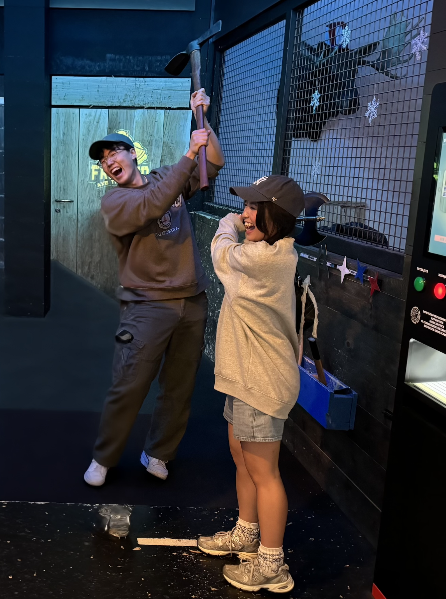

Local Visitor and Alaskan Girl Spotted Together Throughout the Week — Coincidence or Something More?
A lost fanny pack, a few unexpected adventures, and a growing interest between two people who were supposed to just be getting to know each other.

ALASKA — JUNE 2024 — Nathan and Alex weren't exactly strangers when they first met.
Through mutual friends, the two had already seen pictures and videos of each other before meeting in person. They knew of each other, but neither probably expected that Nathan's trip to Alaska would give them the chance to actually get to know one another.
Nathan had traveled to Alaska for his friend's wedding and was spending time with friends, including Alex. Then, during one of their days hanging out, Nathan managed to lose something slightly less important than his dignity: his fanny pack.
The small bag Nathan carried around had disappeared somewhere during the day, and by the next day, the search was officially underway.
Luckily, Alex was the only person available to help.
The two drove around looking for it, stopping at thrift shops and checking different places where it might have been left behind. Eventually, after the search, Nathan found his fanny pack. Mission accomplished.
But something else had happened along the way.
What started as Alex simply helping Nathan find a lost fanny pack gave the two an unexpected opportunity to spend time together — and apparently, neither of them was in much of a hurry to stop.
Over the rest of Nathan's trip, the two continued spending time together. They went axe throwing, grabbed food, went shopping, and attended a jazz concert.
With each outing, the two seemed to become more comfortable around each other. What began as finally meeting someone they had only seen through their friends' pictures and videos was turning into something a little more interesting.
By Nathan's final day in Alaska, there was clearly a story developing. But with Nathan leaving soon, one question remained: would their growing interest in each other continue after he left Alaska?
At the moment, no one knows. But this publication will be watching closely.